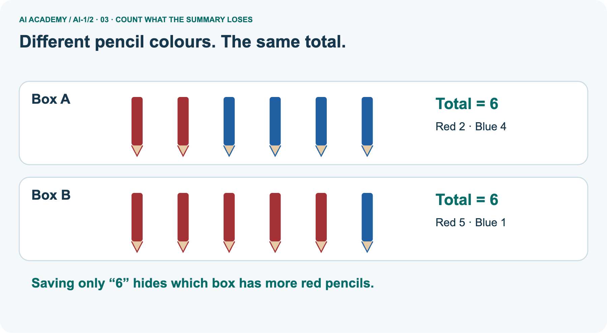
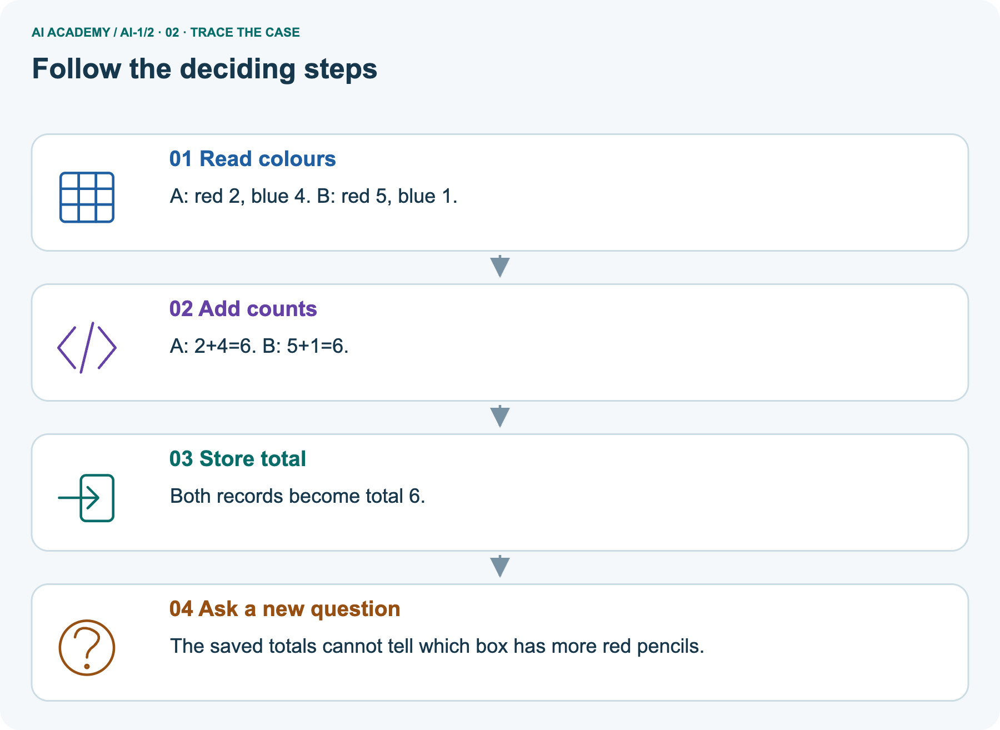
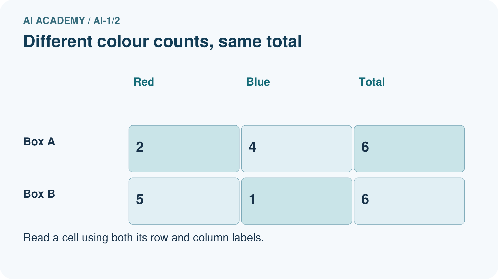
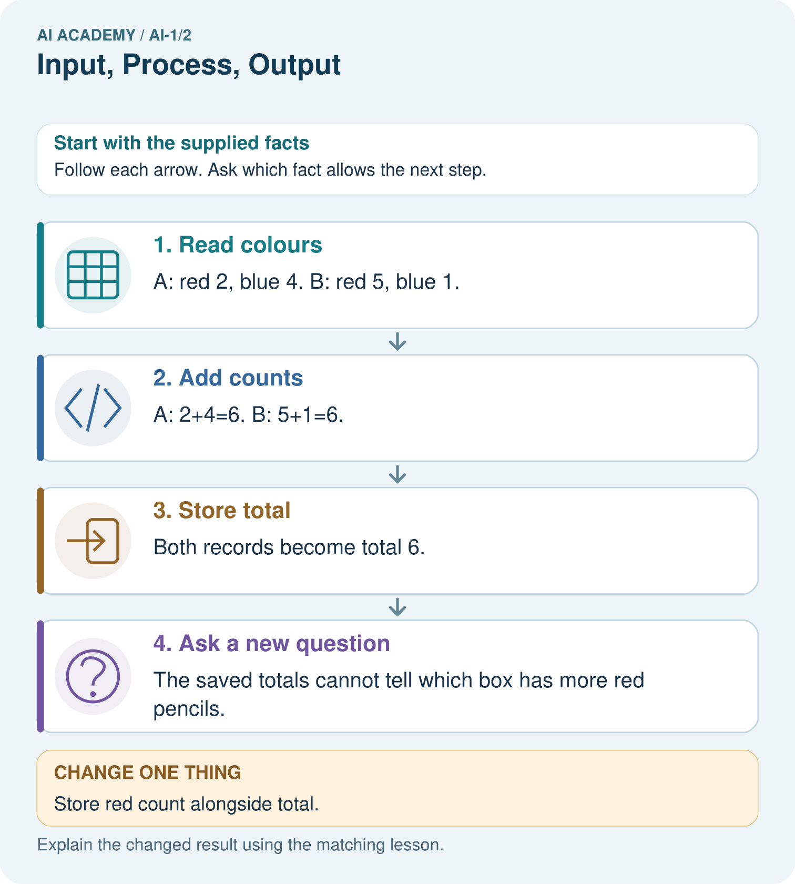
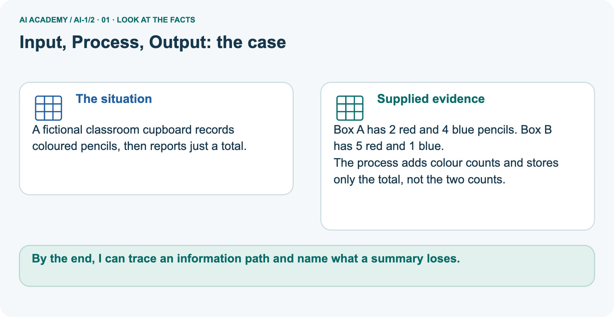
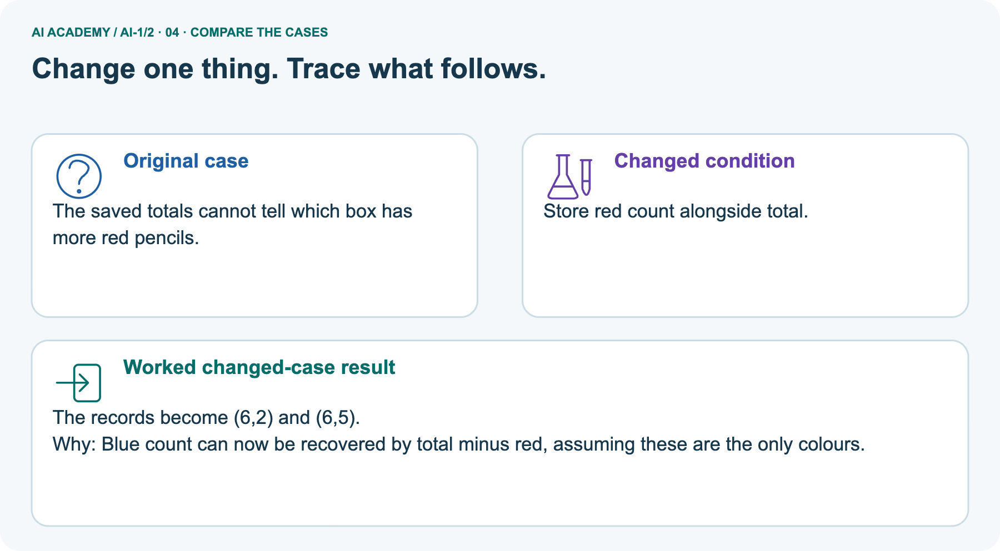
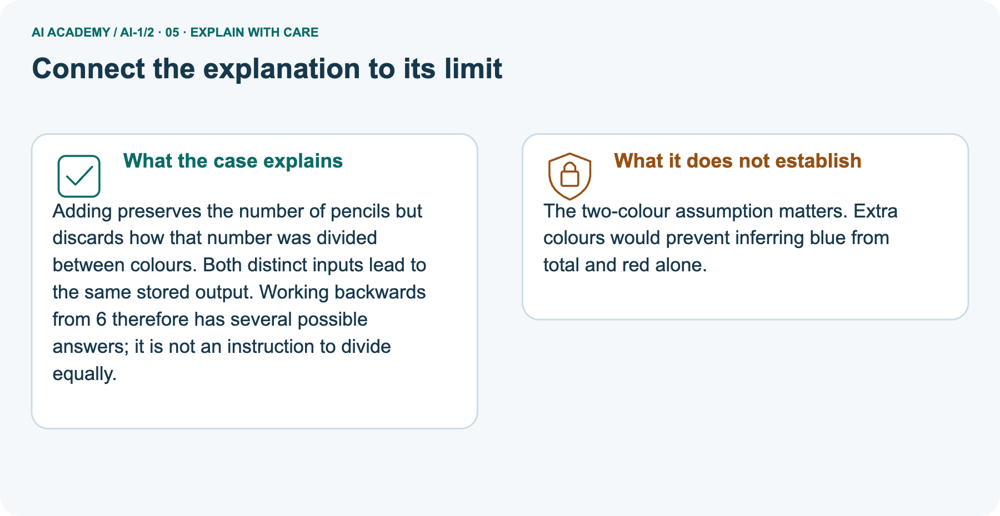
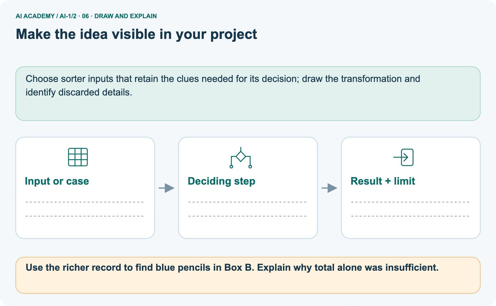

AI Academy · Level 1 · Grade 6 · Week 2 · Teacher guide
Input, Process, Output
Learn to understand, design, build, test and explain AI systems responsibly.
Project: Helpful Classroom Sorter
THE CONNECTED WEEK
Teach one information story.
Trace the kiosk, model information loss, guide visitor schedules, run the supplied music rule and reserve the four-score case for independent evidence.
Keep one habit: Look for a valid trace, two originals when needed, and a defensible limit.
Main lesson · Section 1
Prepare the information-path lesson
Plan one route through tracing, information loss, diagnosis and independent explanation.
Learning goals and preparation
Primary target: Trace information through a system without confusing information with a physical action
Teach input and output as relative to a stage. Avoid claiming that representations are inherently truthful or complete.
This lesson introduces information loss through counterexamples, without requiring formal information theory.
The two-originals method is the important reasoning move: if two source records map to one stored result but imply different answers, the stored result cannot decide that question alone.
By the end, I can trace an information path and name what a summary loses.
What to prepare
Use the supplied scenario, student illustrations and blank paper. For numeric work, offer counters or a calculator after learners show the setup. Fictional records are supplied; personal data and paid accounts are unnecessary.
Catalogue records A science 80, B science 150 and C mystery 90 written on cards
The information-path diagram and blank arrow diagrams
Paper for two four-number lists; no devices or accounts are needed
Main teaching plan
| Session | Sequence and minutes | Resources |
|---|---|---|
| Session 1 · Understand · 45 min | 0–7: recall and prerequisite; 7–15: inspect the concrete case and predict; 15–30: teacher models the worked trace; 30–40: learners explain a step using the text and visual; 40–45: check the core idea. | Use Your mission, Notice the evidence, See how it works, Compare the cases, Words that unlock the idea and Follow a worked example; record the brief recall in the workbook. |
| Session 2 · Practise · 45 min | 0–5: retrieve the procedure; 5–15: W2 completion practice; 15–23: explain and check with a partner; 23–30: each learner answers the misconception check; 30–40: targeted reteaching or a harder variation; 40–45: prepare the investigation. | Use Find and repair a mistake, Practise together, Run the investigation and Build your understanding; use the matching workbook W2 and misconception check. |
| Session 3 · Investigate and transfer · 45 min | 0–5: retrieve the decision rule; 5–20: investigate or trace; 20–30: start the independent case; 30–38: connect the project; 38–43: act on feedback; 43–45: plan the return check. | Use Run the investigation, Connect your project, Show what you know, Study a complete case and Try a new case independently. Allow extra time for the full task set. Use a coding lab only when this week actually provides one; Your lesson route is the planning section. |
This is a starting allocation of 135 minutes, not a validated duration. Preserve all named topics. Schedule extra time for connected examples, the full investigation, independent cases and project building.
Repeated copies of a case share one recorded attempt; they are not new evidence.
Retrieve Week 1
Without opening the old lesson, explain one key idea from AI or Not?. Give an example and a mistake that the idea helps you avoid.
Look for: Distinguish an observed result from an explanation of how it was produced
Reference example, not the only acceptable wording: Observations include that the door opened when the visitor approached and that its label says intelligent entrance.
A useful question asks whether a written sensor threshold, a model fitted on examples or a person controls opening. The label is an observed marketing claim, not mechanism evidence.
The fitted model produced the delay estimate; the written greater-than-10 rule selected the colour. A caretaker or driver decision is a separate action.
Earlier wording, alternative practice and picture transcripts
Teach the learning cycle
Retrieval answer guidance
AI or Not?
Use the student module and workbook section with this exact week title. The worked case, independent question and answers below form one aligned lesson sequence.
What the learner must demonstrate
A library kiosk receives 'mystery', filters a catalogue by genre and displays three titles. No speaker is attached. Draw its information path. A visitor says it read three books aloud. Which stage contradicts that claim?
Concept to explain
A system transforms information; it does not simply 'know.'
| Term | Meaning |
|---|---|
| input | information entering a system |
| process | the steps that transform information |
| output | the result produced by the system |
| trace | follow information through each stage |
Prepare the class
This compact option is not the full-week schedule. Use the main teaching cycle and allow extra sessions for the investigation, independent work and project.
Allow 80 minutes: recall 8; explanation 12; worked demonstration 15; guided practice 20; independent assessment 15; project and reflection 10. Extend the lab into a second session when needed.
Preparation for the connected explanation
Readiness answer
End goal for the pictorial case
This added worked case illustrates the week’s main idea. Retain all original and connected topics; schedule its practice within the teaching cycle.
Main lesson · Section 2
Teach the path and the information it loses
Keep the kiosk, book records and pencil boxes attached to the same question: what does this record support?
Begin with Sam’s kiosk
A library kiosk asks Sam for a genre. Sam selects mystery. The kiosk compares that preference with catalogue tags and displays three book titles. Sam says the kiosk has read three books aloud.
That conclusion adds an action that the description never supplied: displaying a title is different from producing spoken audio.
An information path names what enters each stage, what happens there and what leaves it. Treat input and output as roles relative to a stage.
A list of titles is the output of the search, but it could become the input to a separate text-to-speech stage. A component can therefore receive the output of another component without doing the same job.
The kiosk's genre-matching operation can be implemented with a written rule. Nothing in this description establishes that a model was trained.
This connects to Week 1: tracing information tells us what a process needs to do, while mechanism evidence tells us how it does it.
Separate titles, speech and borrowing
Notice the difference between a title, a description and an entire book. All three can be text, but they represent different amounts of information.
Even a speech stage receiving three titles can speak only those supplied titles; it has not thereby read the full books. Always identify the content of an input, not just its data type.
A recommendation is also different from a loan. Selecting a title does not reserve a copy unless an authorised reservation step exists.
Keeping these distinctions clear prevents us from crediting a system with actions it did not take.
Choose a representation for a question
Consider two catalogue records. Book A has 90 pages and is about a child solving a seaside mystery. Book B has 90 pages and is about a lost spaceship. If we keep only page count, both become the number 90.
The number is useful for a length limit, but it cannot tell us which story is a mystery. Information that was never retained cannot be recovered just by calculating harder.
| Representation kept | Question it can help answer | Question it cannot settle alone |
|---|---|---|
| Page count 90 | Is the book under 100 pages? | Is its story a mystery? |
| Genre tag mystery | Does it match a mystery request? | Will this particular reader enjoy it? |
| Short summary | What does the description say happens? | What exact sentence occurs on page 42? |
The phrase cannot settle alone matters. A genre tag might be inaccurate, and a reader might enjoy an unfamiliar genre. A representation is useful only in relation to a question and its limits.
More detail is not automatically better: unnecessary personal information can add risk without helping the task.
Use the pencil-box counterexample
A fictional classroom cupboard records coloured pencils, then reports just a total.
Box A has 2 red and 4 blue pencils. Box B has 5 red and 1 blue.
The process adds colour counts and stores only the total, not the two counts.






Adding preserves the number of pencils but discards how that number was divided between colours. Both distinct inputs lead to the same stored output.
Working backwards from 6 therefore has several possible answers; it is not an instruction to divide equally.
Store one more field
Change: Store red count alongside total.
Prediction: The records become (6,2) and (6,5).
Reason: Blue count can now be recovered by total minus red, assuming these are the only colours.
Keep the two-colour assumption
The two-colour assumption matters. Extra colours would prevent inferring blue from total and red alone.
Use the picture deliberately
Use the diagram and verbal explanation together. Ask learners to match a sentence to a specific visual step; do not assign learners fixed visual or auditory learning styles.
Cover the result. Ask learners to name the inputs and predict the next step. Uncover one step, connect the icon to the actual procedure, and explain its evidence. Then change the supplied condition and compare.
The picture is a representation; it does not document execution of a real AI model.
Earlier wording, alternative practice and picture transcripts
Explain the mechanism
Follow the information instead of imagining magic inside the machine.
1. Input — information entering
INPUT songs played, liked, or skipped
2. Process — the deciding step
PROCESS compare clues and rank possible songs
3. Output — the result
OUTPUT a suggested song or a not-sure result
CORE IDEA A system transforms information; it does not simply 'know.'
UNDER THE HOOD Input, process, and output are functional roles. The process may contain human choices, fixed rules, calculations, retrieval, or a learned model.
Naming the three stages prevents magical explanations of computer behavior.
Draw a fresh example with all three stages:
Every step connects a claim to observable evidence.
CASE A music helper receives listening choices, compares them with a ranking process, and suggests a song. The suggestion appears only after information has moved through the system.
STEP 1 — OBSERVE songs played, liked, or skipped
STEP 2 — TRACE compare clues and rank possible songs
STEP 3 — CONCLUDE a suggested song or a not-sure result
MODEL REASONING Start with what enters, name the actual transformation rather than saying the system thinks, and identify the result. If the process is unknown, state what evidence is missing instead of inventing a mechanism.
DO NOT OVERCLAIM The output is not proof that the system understood the input as a person would.
What new evidence could change this answer?
Concrete teaching case
A playlist helper receives a mood, matches song tags and displays three titles.
Name input, process and output. Is displaying titles the same as playing audio?
Exact explanation to model
Input is mood; process is tag matching; output is titles. Audio playback is another step. Matching can use fixed rules; the description alone does not establish machine learning.
Explain the added worked example
Key terms
| Term | Meaning |
|---|---|
| Representation | A way of recording information so that it can be stored, communicated or processed |
| Input | Information supplied to a particular process |
| Process | An operation that changes, selects or interprets information |
| Output | The result produced by a process |
| Information loss | Details that cannot be recovered from the retained representation |
Model the reasoning aloud
Use the complete worked example below before asking learners to complete W2. Reveal a small part, invite a prediction, then explain the deciding step.
These teacher notes contain solutions; do not reveal the independent case answer during modelling.
| Thinking move | Teacher prompt |
|---|---|
| Plan | What is given? What is the question? Which procedure fits these facts? |
| Do | Point to each input and intermediate step in the worked trace. Name the rule that allows the next step. |
| Check | Does the output answer the question? Which assumption or limitation prevents a larger claim? |
A pictorial worked case: Input, Process, Output
The facts we will use






Read the picture one step at a time
Why this result follows
What this example does not establish
Change one thing in the pictured case
Ask while showing the picture
Main lesson · Section 3
Guide practice, then remove the help
Use visitor schedules to check whether learners can construct a counterexample themselves.
Prompt before revealing
Completion task: A record stores only total visitors=3. Give two different arrival schedules that produce this total. Can the total tell us the busiest hour? Explain.
Listen for two valid schedules
Teacher check: Examples: three visitors at 09:00, or one each at 09:00, 10:00 and 11:00. Both total 3, but their busiest-hour patterns differ.
The total lacks arrival-time information, so the busiest hour cannot be recovered from it alone.
Start by identifying the given inputs together. Leave the intermediate steps blank. If needed, model one step, then withdraw that help on the next step. Move to a full trace only when the partial trace is understood.
For partners, alternate explainer and checker; collect a response from every learner before discussion.
Check the multi-stage misconception
Use the worked case for Representations and information paths. Proposed explanation: “Every output is the final action”. Decide whether this explanation is supported.
Point to the step or supplied fact that decides; explain your repair if needed.
Expected correction: Trace an output entering the next stage. Ask whether the borrowing or speech stage exists and has run.
Collect explanations, not only yes/no votes. If a misunderstanding is common, re-model the relevant step for the class.
If it affects a few learners, give a short targeted group explanation while others solve a more demanding variation.
Return to the pencil question
Use the richer record to find blue pencils in Box B. Explain why total alone was insufficient.
6−5=1 blue pencil. Total 6 alone fits many red/blue combinations, including both boxes.
Changed-case reasoning: The records become (6,2) and (6,5). Blue count can now be recovered by total minus red, assuming these are the only colours.
Collect each learner’s explanation before discussion. Use the first missing connection between input, deciding step and result to choose support. This question is worked-case practice, not fresh mastery evidence.
Keep each learner explaining
Ask: Which facts are given, and which would we have to assume? Learners mark relevant details before discussing answers.
Say: Predict first. Show the rule, information path or calculation that would produce the result. A correct guess is not yet an explanation.
In pairs, one learner solves while the other checks evidence; exchange roles. Remove the worked answer before independent assessment.
Earlier wording, alternative practice and picture transcripts
Demonstrate and guide practice
Board sequence
Write the given facts: A playlist helper receives a mood, matches song tags and displays three titles.
Write the question to explain: Name input, process and output. Is displaying titles the same as playing audio?
Reveal after predictions: Input is mood; process is tag matching; output is titles. Audio playback is another step. Matching can use fixed rules; the description alone does not establish machine learning.
Keep the fan case for optional later practice. Reserve the four-score case for the first independent attempt before feedback.
Classroom dialogue
Reveal reasoning one step at a time. Explain why a tempting alternative fails. Write units and denominators for arithmetic, trace conditions for decisions, and identify supporting sources for claims.
Model these guided questions
Visitor schedules can be three at 09:00 or one each at 09:00, 10:00 and 11:00. The total does not reveal timing or busiest hour.
Displaying a book title produces text on a screen; speaking needs audio generation, reserving needs an authorised availability update and reading the whole book needs its full content.
Case-specific teaching sequence
| Stage | Teacher action |
|---|---|
| Session 1 start 0 to 7 minutes | Retrieve the bus stages from Week 1. Ask which result becomes a later input. |
| 7 to 20 minutes | Read the kiosk case and trace the first diagram row. Cover later rows, then reveal them as additional operations rather than assumed capabilities. |
| 20 to 33 minutes | Use the two 90-page book descriptions. Ask which question survives when only 90 is kept. Model one counterexample. |
| 33 to 45 minutes | Pairs complete W1 and the visitor example. Require exact input fields and outputs. |
| Session 2 start 0 to 8 minutes | Ask whether a largest temperature proves a rising sequence. Have two students construct alternative sequences. |
| 8 to 23 minutes | Complete W2 and W3. Separate current records, exact source text and summary tags. |
| 23 to 38 minutes | Collect W4 independently. Give no example list until the attempt is saved. |
| 38 to 45 minutes | Use W5 to connect information loss with stage diagnosis. Review the exit explanation and preview measurement. |
Reduce help deliberately
Individual reasoning check
Pictorial practice question
Reasoned teacher answer
Main lesson · Section 4
Run the music-helper investigation
A fully specified rule makes the expected and actual paper trace inspectable.
Prepare the supplied toy system
Use the student lesson’s fictional two-mood helper: calm → Quiet River; lively → Jumping Feet; missing or unrecognised mood → ask for calm or lively. Pairs predict, then apply the rule on paper. A calm input produces the first title; a blank input produces the request. Distinguish a paper trace from a real software run. Reserve the four-score case for the individual first attempt.
Run and record the cases
Complete the task: Trace a music recommender and draw all three stages.
Keep a normal case and an edge case clearly separated.
Record what happened—even when it does not match your prediction.
Explain the result, one limitation, and the next useful test.
Keep a checkable record
| Record | What to capture |
|---|---|
| Input or evidence | Exact data, instruction or claim |
| Expected result | Answer or safe fallback declared before the run |
| Observed result | Actual result, including errors |
| Explanation | Rule, calculation or evidence explaining the outcome |
| Next test | One justified change and a new prediction |
Diagnose the first misunderstanding
Every output is the final action: Trace an output entering the next stage. Ask whether the borrowing or speech stage exists and has run.
More calculation can recover discarded details: Ask students to distinguish two original records with the same retained value. No deterministic calculation of that value alone can know which original occurred.
A data type tells us what the data means: Compare a title, a summary and a full chapter. All can be text while supporting different questions.
Choose the next teaching action
| What the response shows | Next teaching action |
|---|---|
| Missing or misread facts | Read the case aloud, mark supplied versus unknown facts, and let the learner restate it. |
| Wrong procedure | Return to the deciding step in the worked case. Contrast it with the proposed incorrect explanation. |
| Arithmetic or implementation error | Trace intermediate values or lines; preserve the first mismatch and retry that step. |
| Correct result without a reason | Ask for a trace and a changed case before marking independent understanding. |
| An unsupported wider claim | Ask which supplied evidence supports the claim and which further observation would be needed. |
Offer an oral explanation, drawing, enlarged visual or fewer examples when that removes a reading/writing barrier. Keep the same reasoning goal.
Stretch secure learners by changing a boundary or assumption and asking them to defend the effect, not simply by assigning more of the same questions.
Earlier wording, alternative practice and picture transcripts
Run the weekly evidence lab
Predict first, test honestly, and explain what the evidence means.
State your prediction before the result is known.
INDEPENDENCE After support is removed, repeat the proof with a fresh case.
Make the lab runnable
Use the supplied two-mood music helper for shared practice. Each pair creates a missing or unrecognised mood case and predicts the rule’s request before tracing it. Reserve the four-score case for the individual first attempt; keep expected and observed paper-trace results separate.
Diagnose and reteach
CLAIM TO REPAIR The fan's movement is the input.
For guessing, return to given facts and request a trace. For vocabulary without application, use one example and one non-example. For arithmetic errors, check the setup before the calculation.
Finish with a different uncoached case before recording mastery.
Address these additional misconceptions
Match the support to the first error
Main lesson · Section 5
Assess the four-score explanation
Reserve this answer until the learner has made the first independent attempt.
Selected independent question and key
Selected case: A classroom device receives four scores and stores only their total, 20. A student claims that every score must be 5. Give two different lists of four nonnegative whole-number scores with total 20.
Explain precisely what the stored total establishes and what it does not.
For example [5,5,5,5] and [2,4,6,8] both total 20. The stored total establishes the sum under the stated recording process, but not the individual scores or their equality.
A list with fewer than four entries or a different total is not a valid counterexample.
Judge explanation, trace and limits
| Dimension | Evidence required |
|---|---|
| Explanation | Names the applicable idea or procedure and ties it to the supplied facts. |
| Trace and result | Preserves the given inputs and shows the relevant intermediate steps; distinguishes a prediction from an observed execution. |
| Limits | States the assumptions, missing evidence or conditions under which the result would change. |
Record each dimension as not yet, with support, or independent. Accept a valid alternative procedure with a defensible trace.
Do not penalise an honestly recorded model failure if the learner correctly explains its evidence and limits.
Give feedback that changes the next attempt
Name the earliest unsupported step and give one action to repair it. Have the learner make that repair now and explain why. Then assess the relevant skill on a fresh, fully specified case.
Confirm it was not previously practised with feedback; solve and check the new case before assigning it. A follow-up design prompt is a starting brief, not automatically an equivalent test.
Workbook W1: catalogue filter
The kiosk receives genre=science and maximum pages=120. The catalogue contains A science 80 pages, B science 150 pages and C mystery 90 pages. It keeps records with the requested genre and no more than 120 pages.
Draw the input, process and output, naming the surviving record.
Input includes both request fields and all three catalogue records. The process checks science AND pages<=120. Output contains A only; B fails the length condition and C fails the genre condition.
Listing A does not establish that a copy was reserved.
Workbook W2: visitor schedules
A record stores only total visitors=3. Give two different arrival schedules that produce this total. Can the total tell us the busiest hour? Explain.
Examples: three visitors at 09:00, or one each at 09:00, 10:00 and 11:00. Both total 3, but their busiest-hour patterns differ. The total lacks arrival-time information, so the busiest hour cannot be recovered from it alone.
Workbook W3: sufficient information
For each task, choose the information needed: decide whether a book is under 120 pages; quote its first sentence exactly; decide whether a copy is available now. Explain why a genre tag alone is insufficient for all three.
Use the page count for the length condition, the actual first sentence from the correct edition for an exact quote, and a current copy-availability record for availability. Genre supplies none of those facts.
Even suitable records must be checked for the correct edition or time.
Workbook W5: voice-calculator diagnosis
A voice calculator receives a spoken request for 16 divided by 4. Its transcript says 60 divided by 4 and its calculator returns 15.
Identify the first incorrect stage, show the intended result and propose a check before calculation.
Transcription first changes 16 to 60. The calculator correctly computes the wrong supplied expression. The intended result is 4.
Display or confirm the interpreted numbers before calculating, rather than changing the arithmetic code to force the expected answer.
Earlier wording, alternative practice and picture transcripts
Assess and explain the answers
Worked case answer
Input is mood; process is tag matching; output is titles. Audio playback is another step. Matching can use fixed rules; the description alone does not establish machine learning.
Additional transfer practice: fan
A classroom fan receives a temperature reading, compares it with 25 degrees C, and turns on. Name the input, process and output. What should happen if the reading is missing?
Reasoned fan-practice answer
Input is the reading; process is comparison with 25 degrees C; output is the fan command. A missing reading calls for a fault signal or human review, not an invented temperature.
What counts as evidence
| Criterion | 0 points | 1 point | 2 points |
|---|---|---|---|
| Result | Incorrect or absent | Partly correct | Correct with necessary conditions |
| Reasoning | No supporting trace | Some steps | Clear mechanism, calculation or source support |
| Limit | Overclaims certainty | Vague limitation | Relevant uncertainty or missing fact |
| Transfer | Copies without adapting | Adapts with prompts | Solves a changed case independently |
Use 6/8 as a classroom checkpoint, with 2 required for both Result and Reasoning. This is a proposed teaching rule, not a validated certification threshold.
Do not count a coached answer as independent mastery; correct unsafe or unsupported claims regardless of total.
Feedback
Ask the learner to find the evidence that challenges this claim: “The fan's movement is the input.” Keep the first attempt and an uncoached retry separate.
Original transfer answer
Input is the genre request, processing is catalogue filtering, output is three titles. There is no audio-output stage. Filtering could use a written rule; the description does not establish learning.
The claim confuses title display with reading aloud.
Explanations for the additional workbook examples
W1 Trace a request
W2 Finish the visitor example
W3 Choose a sufficient representation
W4 Investigate a new loss of information
A classroom device receives four scores and stores only their total, 20. A student claims that every score must be 5. Give two different lists of four nonnegative whole-number scores with total 20.
Explain precisely what the stored total establishes and what it does not.
For example [5,5,5,5] and [2,4,6,8] both total 20. The stored total establishes the sum under the stated recording process, but not the individual scores or their equality.
A list with fewer than four entries or a different total is not a valid counterexample.
W5 Diagnose before repairing
Assess independent transfer
Selected case answer
Feedback that the learner uses
Main lesson · Section 6
Connect, adapt and revisit
Retain one project map and use changed cases to check understanding later.
Project evidence to keep
Draw the Classroom Sorter's first input-process-output map and show where a person may review the result.
Keep the decision, input, result, explanation and remaining limitation in the project evidence record. Retrieve this record next week rather than restarting the project.
Choose sorter inputs that retain the clues needed for its decision; draw the transformation and identify discarded details.
Support without giving away the reasoning
Use physical cards, spoken explanations and a three-stage drawing. Read aloud without giving the answer. Stretch: compare two mechanisms with the same visible output and explain what evidence distinguishes them.
Provide four empty boxes and counters for learners who need arithmetic support. Let them explain information loss orally.
Extension: ask which extra field, such as minimum score, would rule out one of their lists and whether it would uniquely determine the original list.
W4 is secure when both lists contain four nonnegative whole numbers, both sum to 20, at least one is not all fives, and the explanation distinguishes sum from individual values.
If the learner offers only one list, request another record consistent with the same total. Use a different total for the uncoached retry.
Plan and record the return check
Suggested return points in this level: ai-1/3, ai-1/5, ai-1/8. Use actual classroom dates, adjusting for holidays and gaps. One, three and six teaching weeks are scheduling choices, not a claimed optimal spacing.
At a delayed check, ask for the idea from memory and a changed application. Compare with the earlier independent response and record support used.
For a new level, revisit the previous capstone before checking the new prerequisites.
| Record | Teacher evidence |
|---|---|
| Learner code and date | |
| Concept and case used; prior exposure | |
| Explanation / trace / limits | |
| Support and first repair | |
| Changed case and delayed outcome | |
| Next teaching action |
Use the evidence to choose reteaching or the next step. A completed page, confidence rating or attractive project does not by itself demonstrate understanding.
Bridge to sensors
Ask for one decision the learner can now justify and one situation requiring more evidence or human review. Confidence ratings are separate from correct independent performance.
Next: Week 3: Sensors Are Messengers. Retrieve today’s evidence and identify what carries forward and what is new.
Week 3 examines how physical signals become measurements, including the units and conditions needed to interpret recorded values.
Earlier wording, alternative practice and picture transcripts
Connect and extend learning
Helpful Classroom Sorter
Support and stretch
Exit reflection
Bridge to the next week
Support and fresh reassessment
Plan the delayed return
Project evidence from this case
Reference bank and extra practice
Choose the reference that helps your next step.
Reference: alternative planning checklist
Reference · Section 7
Reference: alternative planning checklist
Use this as a planning reminder alongside the main route, rather than repeating a second lesson.
Preparation and schedule
Teaching target: Trace information through a system without confusing information with a physical action
Prepare the labelled worked-case picture, the matching workbook, fictional input cards and a place for individual responses. No paid AI account is required for the paper reasoning activities.
| Session | Plan | Resources |
|---|---|---|
| Session 1 · Understand · 45 min | 0–7: recall and prerequisite; 7–15: inspect the concrete case and predict; 15–30: teacher models the worked trace; 30–40: learners explain a step using the text and visual; 40–45: check the core idea. | Use Your mission, Notice the evidence, See how it works, Compare the cases, Words that unlock the idea and Follow a worked example; record the brief recall in the workbook. |
| Session 2 · Practise · 45 min | 0–5: retrieve the procedure; 5–15: W2 completion practice; 15–23: explain and check with a partner; 23–30: each learner answers the misconception check; 30–40: targeted reteaching or a harder variation; 40–45: prepare the investigation. | Use Find and repair a mistake, Practise together, Run the investigation and Build your understanding; use the matching workbook W2 and misconception check. |
| Session 3 · Investigate and transfer · 45 min | 0–5: retrieve the decision rule; 5–20: investigate or trace; 20–30: start the independent case; 30–38: connect the project; 38–43: act on feedback; 43–45: plan the return check. | Use Run the investigation, Connect your project, Show what you know, Study a complete case and Try a new case independently. Allow extra time for the full task set. Use a coding lab only when this week actually provides one; Your lesson route is the planning section. |
Practice and assessment reminders
Before class, solve the supported practice: A record stores only total visitors=3. Give two different arrival schedules that produce this total. Can the total tell us the busiest hour? Explain.
Reasoned practice answer: Examples: three visitors at 09:00, or one each at 09:00, 10:00 and 11:00. Both total 3, but their busiest-hour patterns differ.
The total lacks arrival-time information, so the busiest hour cannot be recovered from it alone.
Check every learner before discussion: Use the worked case for Representations and information paths. Proposed explanation: “Every output is the final action”. Decide whether this explanation is supported.
Point to the step or supplied fact that decides; explain your repair if needed.
Misconception repair: Trace an output entering the next stage. Ask whether the borrowing or speech stage exists and has run.
Support: read the exact case aloud, enlarge the labelled picture, supply input cards and model only the first deciding step. Accept a spoken explanation or drawing; retain the reasoning goal.
Extension: Store red count alongside total. Require a prediction and a reason before comparing. Expected result: The records become (6,2) and (6,5).
Reason: Blue count can now be recovered by total minus red, assuming these are the only colours.
Independent assessment: withhold the reserved answer until the learner has attempted the new case. Record support separately from correctness.
| Criterion | Not yet | With support | Independent |
|---|---|---|---|
| Explanation | Names an answer without a deciding fact | Uses a hint to link fact and decision | Explains the deciding fact in own words |
| Trace or test | Cannot connect input and result | Completes steps with prompts | Traces or tests a changed case accurately |
| Limits and revision | Claims more than evidence supports | Names a limit after a prompt | States a defensible limit and useful next test |
Project checkpoint: Frame the need. Name the user, the problem, allowed inputs and a safe simple starting method.
Use the weekly teacher answer for topic-specific reasoning. A saved progress tick is an activity record; judge mastery from the learner’s explanation and evidence.
Reference: feedback and digital records
Reference · Section 8
Reference: feedback and digital records
The paper activities need no coding account; use tools when they help retain evidence.
Separate practice and assessment
Use the two formative questions as supported practice, not as independent mastery scores. Discuss the deciding evidence rather than accepting a guessed selection.
The feedback comes from the reviewed public worked case. Do not reveal the separately reserved independent teacher answer until the learner has attempted that case.
Repair and portfolio record
Use the earlier worked-explanation links to address a specific missing building block, then return to the current question. Adapt this suggestion after observing the learner; it is not an automatic diagnosis.
Collect the completed-work portfolio as evidence. Record support separately from correctness, and assess explanation, trace/test and limitations. Progress ticks and quiz selections alone do not establish mastery.
Earlier wording, alternative practice and picture transcripts
This week has no code block. Use this routine when a later lesson includes an executable lab.
Ask students to predict before running code. Preserve errors and actual outputs; collect a changed test and an explanation. The branch-boundary and indexing lessons deliberately include failure cases.
Reference: teach with the six pictures
Reference · Section 9
Reference: teach with the six pictures
Choose the image for the teaching move, then use its adjacent explanation.
01. Input, Process, Output: the case



A fictional classroom cupboard records coloured pencils, then reports just a total. Supplied facts: Box A has 2 red and 4 blue pencils. Box B has 5 red and 1 blue.
The process adds colour counts and stores only the total, not the two counts.
Point to the given fact that matters most. Explain why it matters.
Teacher prompt: Point to the given fact that matters most. Explain why it matters. Ask learners to describe one label or arrow in ordinary words. Use the adjacent transcript if the image is difficult to see.
02. Follow the deciding steps
Read colours: A: red 2, blue 4. B: red 5, blue 1. → Add counts: A: 2+4=6. B: 5+1=6. → Store total: Both records become total 6. → Ask a new question: The saved totals cannot tell which box has more red pencils.
Point to each numbered stage and explain which recorded input it uses.
Teacher prompt: Point to each numbered stage and explain which recorded input it uses. Ask learners to describe one label or arrow in ordinary words. Use the adjacent transcript if the image is difficult to see.
03. Different pencil colours. The same total.
Box A: 2 red pencils and 4 blue, total 6. Box B: 5 red pencils and 1 blue, total 6. The equal totals do not preserve the colour counts.
Read the labels and values. Explain the relationship the model shows.
Teacher prompt: Read the labels and values. Explain the relationship the model shows. Ask learners to describe one label or arrow in ordinary words. Use the adjacent transcript if the image is difficult to see.
Check row/column meanings, units and denominators before discussing a difference. Supplied toy values are not real class or model results.
04. Change one thing. Trace what follows.



Original case: The saved totals cannot tell which box has more red pencils. Changed condition: Store red count alongside total. Expected result: The records become (6,2) and (6,5).
Reason: Blue count can now be recovered by total minus red, assuming these are the only colours.
Predict before checking the worked changed-case result. Name what changed and what the supplied facts allow you to conclude.
Teacher prompt: Predict before checking the worked changed-case result. Name what changed and what the supplied facts allow you to conclude. Ask learners to describe one label or arrow in ordinary words.
Use the adjacent transcript if the image is difficult to see. Changed-case reasoning: Blue count can now be recovered by total minus red, assuming these are the only colours.
05. Connect the explanation to its limit



Adding preserves the number of pencils but discards how that number was divided between colours. Both distinct inputs lead to the same stored output.
Working backwards from 6 therefore has several possible answers; it is not an instruction to divide equally. Limit: The two-colour assumption matters. Extra colours would prevent inferring blue from total and red alone.
Explain the case, then point to a limit on the claim.
Teacher prompt: Explain the case, then point to a limit on the claim. Ask learners to describe one label or arrow in ordinary words. Use the adjacent transcript if the image is difficult to see.
Keep the stated scope: The two-colour assumption matters. Extra colours would prevent inferring blue from total and red alone.
06. Make the idea visible in your project



Choose sorter inputs that retain the clues needed for its decision; draw the transformation and identify discarded details. Draw your input, deciding step, result and limit.
Supported question: Use the richer record to find blue pencils in Box B. Explain why total alone was insufficient.
Draw your project trace and justify the deciding step using evidence.
Teacher prompt: Draw your project trace and justify the deciding step using evidence. Ask learners to describe one label or arrow in ordinary words. Use the adjacent transcript if the image is difficult to see.
Supported practice key: 6−5=1 blue pencil. Total 6 alone fits many red/blue combinations, including both boxes.
Earlier wording, alternative practice and picture transcripts
Use one picture at a time. Hide a worked result before asking for a prediction, then reveal it for feedback. These are supported teaching cases; retain the separate independent assessment for a fresh first attempt.